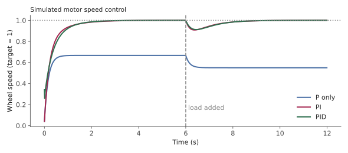
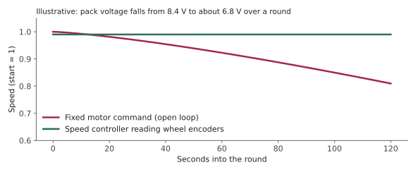
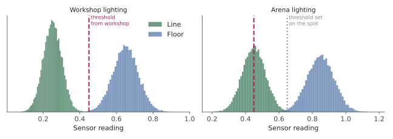
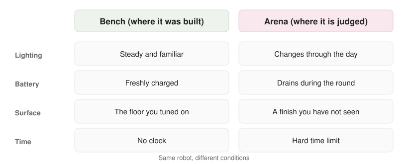

Why does a robot that works in the lab fail on the competition floor?
Context. I mentored the IEEE RAS PESU team, which finished as runner-up for PESU at the World Robotics Championship in Noida, and I was part of a runner-up finish at the Robowars tournament in 2023. The explanations below are general engineering lessons, and the figures are simulations I wrote to illustrate them, not data from those events.
A robot that behaves perfectly on the bench can fall apart the moment it is placed on an unfamiliar arena. The cause is rarely one dramatic bug. It is usually a collection of small differences between the place where the robot was built and the place where it is judged, and each difference pushes a hidden assumption past the point where it holds. This post goes through where those assumptions hide: in the control loop, in the sensors, in the power supply, and in the way robots are tested.
1. A robot is a stack of loops
The classic picture is sense, plan, act: read the sensors, decide what to do, drive the motors, repeat. Real robots run several of these loops at once. A fast inner loop holds wheel speed, a slower loop follows a line or steers toward a target, and a slow outer loop picks goals. Rodney Brooks argued in 1986 for building robots from layers of simple behaviours, each reacting directly to the world, instead of one big planner, and many competition robots are built that way in practice: avoid the edge, follow the line, attack, with the safest behaviour taking priority.
The layered view explains why failures cascade. If the inner loop drifts, the loop above it is steering a vehicle that no longer does what it was told, and its tuning is wrong without anyone having changed it.
2. Control: why a proportional controller is not enough
The workhorse controller is the PID loop. It looks at the error, the gap between the target and the measurement, and sets the motor command from three terms:
command = Kp * error + Ki * (sum of error over time) + Kd * (rate of change of error)
- Proportional (Kp) pushes harder the further you are from the target. On its own it leaves a permanent gap, because once the error is small the push is too weak to close it.
- Integral (Ki) keeps adding up the leftover error until it is gone, which removes that gap and also fights steady disturbances such as extra load.
- Derivative (Kd) reacts to how fast the error is changing, which damps overshoot. It also amplifies sensor noise, so it needs care.
The simulation below controls the speed of a motor that responds with a lag, and adds extra load at the six-second mark. With proportional control only (Kp = 2), the wheel settles about a third short of the target, and falls further short when the load arrives. With an integral term added, the wheel reaches the target, dips by less than 10% when the load arrives, and recovers within about three seconds. In this simple plant the derivative term barely changes the picture, which is typical: it matters more when the system is fast, lightly damped or has delays.

Two practical warnings. Integral windup: if the motor is saturated at full power, the integral term keeps accumulating and then overshoots badly when the robot is freed, so competition code usually limits it. And tuning by trial is fine, but a method such as Ziegler and Nichols’s 1942 rules gives a systematic place to start instead of random guessing.
3. Power: the battery is part of the system
To a first approximation, a brushed DC motor driven at a fixed duty cycle turns at a speed proportional to the voltage it sees. A battery pack’s voltage falls as it discharges and sags under load. A robot tuned on a fresh pack and driven by fixed commands therefore gets slower through a round, and every timed manoeuvre, such as turning for half a second to rotate ninety degrees, quietly becomes wrong.

The remedy is to close the loop. Measure wheel speed with encoders and let the controller change the command as the voltage changes, and turn by measuring the angle with a gyroscope or encoders instead of timing the motion.
4. Sensing: thresholds that were never universal
Line-following robots usually read a row of reflectance sensors and compute where the line is from the readings. The step that fails first is deciding whether a reading means “line” or “floor”. In the workshop the line reads low and the floor reads high, and a fixed threshold between them works. Under different lighting or on a floor with a different finish, both distributions move, and the old threshold now cuts through the middle of one of them.

In this simulation (invented but plausible numbers: both readings shift upward under arena lighting and spread out a little), a threshold chosen in the workshop makes about 0.1% errors there and about 25% errors in the arena. Setting the threshold on the spot, midway between the line and floor readings measured in place, brings the error to about 0.4%. The lesson is cheap to apply: calibrate at the venue, at the start of each round, instead of carrying numbers over from another day.
5. Drift: position estimates decay
Wheel encoders count rotations, but wheels slip, so dead-reckoned position drifts. A gyroscope measures rotation rate well over short times, but integrating it accumulates a bias. Neither can be trusted alone for long. The standard answer is sensor fusion: combine fast, drifting sensors with slower, absolute ones (a line crossing, a wall distance, a marker) using a filter. Rudolf Kálmán’s 1960 filter is the classic tool, and Thrun, Burgard and Fox’s Probabilistic Robotics is the standard reference. The point for a competition robot is simple even without the mathematics: use every absolute landmark the arena offers to reset the estimate.
6. The gap in one picture

Putting the three simulations together shows a pattern. In each, the design worked inside the conditions it was tuned for and degraded outside them, and in each, the fix was to measure the quantity in place instead of assuming it: wheel speed instead of command, a threshold from live readings instead of a stored number, an angle from a gyroscope instead of a time.
7. A practical checklist
- Prefer simple. Every extra mechanism and behaviour is another thing that can fail in the one round that counts.
- Close the loops. Where there is a sensor, use it to correct the command instead of timing or open-loop guessing.
- Calibrate on site. Re-measure thresholds and offsets in the arena, under its lighting, on its surface.
- Test the unhappy path. Run with a half-charged battery, a dusty or unfamiliar surface, and a hard time limit, and run a failure drill: what does the robot do if a sensor reads nonsense?
- Keep a safe default. The highest-priority behaviour should stop the robot from leaving the arena or damaging itself, whatever the layers above decide.
- Practise the pit stop. Quick battery swaps, spare parts and a written checklist save more time than another firmware tweak.
8. The same lesson in learning-based robotics
Robots trained in simulation face a bigger version of the bench-versus-arena gap. A policy that works in a clean simulator can fail on a real camera and floor. Josh Tobin and colleagues’ domain randomisation (2017) tackles this by randomising lighting, textures and positions in simulation so that the real world looks like one more variation among many. It is the same principle as testing under unhappy conditions, applied to training. It is also why I care about evaluating AI agents on situations they have not seen: a system measured only under the conditions it was built for tells you little about how it will behave elsewhere.
Further reading
- Brooks, R. A. (1986). A robust layered control system for a mobile robot. IEEE Journal of Robotics and Automation.
- Ziegler, J. G. and Nichols, N. B. (1942). Optimum settings for automatic controllers. Transactions of the ASME.
- Kálmán, R. E. (1960). A new approach to linear filtering and prediction problems. Journal of Basic Engineering.
- Thrun, S., Burgard, W. and Fox, D. (2005). Probabilistic Robotics. MIT Press.
- Siegwart, R. and Nourbakhsh, I. R. (2004). Introduction to Autonomous Mobile Robots. MIT Press.
- Tobin, J. et al. (2017). Domain randomization for transferring deep neural networks from simulation to the real world. IROS.
Appendix: credits
- Figures 1 to 3 are simulations I wrote for this post. Their parameters are illustrative, not measurements from a real robot. Figure 4 is my own schematic.